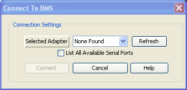

The BMS requires a serial to USB adapter (or straight serial connection) to communicate with the computer. Without this adapter the computer would not be able to communicate with the BMS.
There are several reasons that could cause the adapter to not be found by the computer. Here are the most common:
The BMS may not be powered. If the BMS is not powered then the utility cannot detect the adapter.
The serial adapter may not be connected to the computer USB port (if USB adapter is used). Check that the USB cable is connected to the adapter and the computer (or if using straight serial cable, ensure serial cable is connected to the computer).
Make sure the correct serial cable is being used. If not using a USB serial adapter, a straight-through serial cable should be used (NOT a null modem cable). All serial signals should be passed through (the RS232 portion of the BMS is isolated and powered from the computer). Please see the "Digital RS232 Serial Communication" section in the wiring manual for details.
There may be another application running that is using the adapter. An example might be another instance of the BMS utility that is already running on the computer. The adapter can only be used by one application at a time and only one copy of the utility can use the adapter at a time.
The adapter may not be being recognized by the operating system. In other words, the hardware driver may not be installed properly or may be missing on the computer. Make sure your computer operating system is up to date. Some operating systems provide a troubleshooting process for unrecognized hardware which can be used to install the proper driver.
The USB port that the adapter is plugged into may be bad or not powered. Try unplugging the adapter from the USB port and plugging it back in. If this does not solve the problem try plugging it in to a different USB port.
| < Connection To BMS Failed | Connection To BMS Slow > |